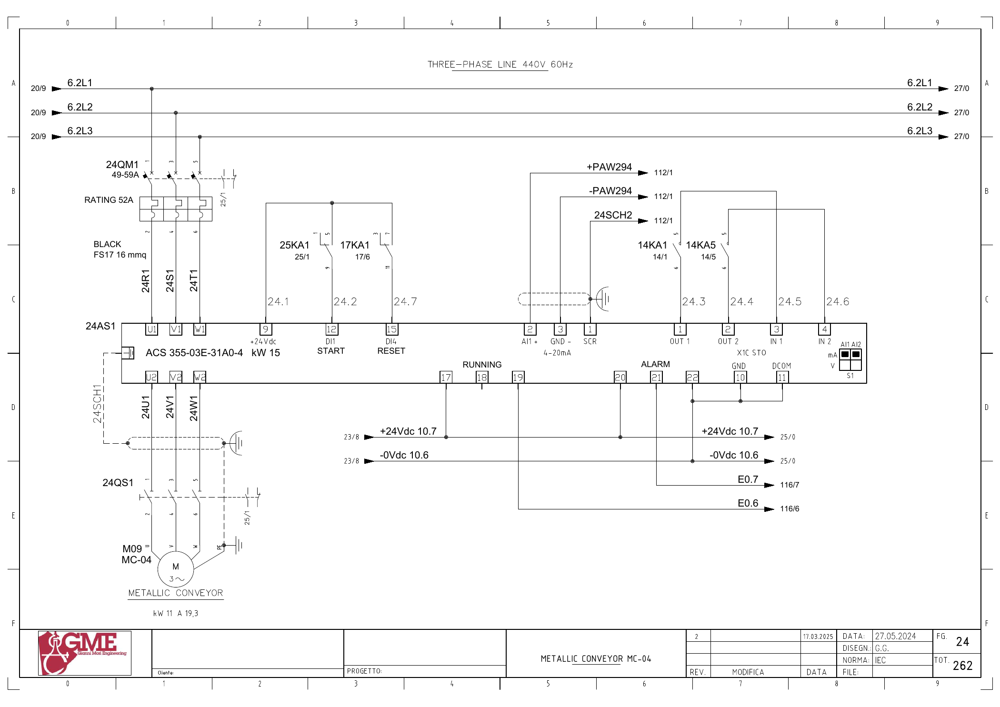
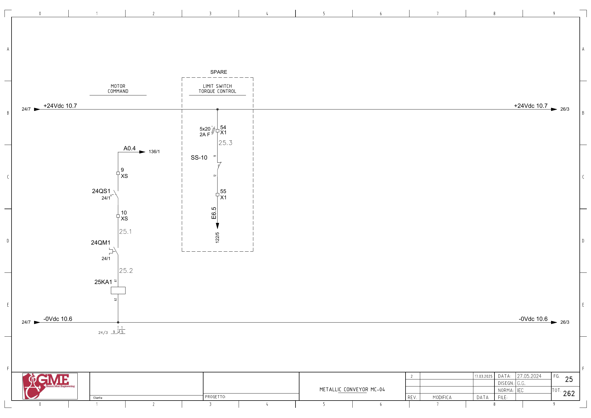

MC04 · 금속 컨베이어 전기 회로 추적
1. 도면의 구성과 진단 경계
FG24: M09 MC-04(도면11kW·19.3A), 24AS1 ACS355-03E-31A0-4(15kW), 24QM1·24QS1. FG25의 SS-10 토크 감시는 SPARE 영역입니다.
PLC 요청은 VS01 운전 응답·유지보수 신호와 연동되지만, 실제 DI1 전달은 별도 하드웨어 접점을 거칩니다. 예비 토크 입력을 기동 피드백 대신 쓰지 않습니다.
추가 시공도면 · 접속함·케이블·배관 경로 — 승인·현재 설치는 확인 전입니다.
2. 기동 명령
A0.4 ↔ 백업 %Q0.4 / start mc04 · FG25 · PDF 26
- A0.4 (FG136/1)
- XS:9 → 24QS1 보조접점 → XS:10
- 24QM1 보조접점
- 25KA1 코일 A1→A2 / 0Vdc10.6
전달·사용 위치: FG24: 24AS1 단자9(+24V) → 25KA1 접점1→9 → 단자12(DI1 START). 원본1941의 요청과1791의5초 감시를 연결합니다.
원본 심볼 직접 참조: 1791 / allarms 1 / ORef 450 · 1941 / motors 1 / ORef 352
3. 운전 응답
E0.6 ↔ 백업 %I0.6 / mc04_fbk · FG24 · PDF 25
- +24Vdc10.7 → 24AS1 단자17
- 단자19 → E0.6
- PLC 입력 참조 FG116/6
전달·사용 위치: 원본1791·1941의 내부 MC04 운전 응답을 추적합니다. 물리→DB 전달은 미확정입니다.
원본 심볼 직접 참조: 1022 / time work motor / ORef 1342 · 1916 / r1 scraps gate 2 / ORef 482
4. 인버터 이상
E0.7 ↔ 백업 %I0.7 / mc04_all_inv · FG24 · PDF 25
- +24Vdc10.7 → 24AS1 단자20
- 단자21 → E0.7
- PLC 입력 참조 FG116/7
전달·사용 위치: 백업 설명에 feedback 표기가 있으나 심볼은 인버터 이상, 도면은 ALARM입니다. 명칭·극성 확인이 필요합니다.
원본 심볼 직접 참조: 복원 LAD에서 이 이름의 직접 참조는 찾지 못했습니다. 내부 Inputs 등의 별도 전달·미해석 참조·현재 프로그램은 확인 전입니다.
5. 토크 감시 예비
E6.5 ↔ 백업 %I6.5 / mc04_torque · FG25 · PDF 26
- +24Vdc10.7 → X1:54 / 2A F(5×20)
- SS-10:11→12
- X1:55 → E6.5 → FG122/5
전달·사용 위치: FG25 점선 SPARE 영역. 원본1792의 deleted 표기와 실제 사용 여부를 함께 확인합니다.
원본 심볼 직접 참조: 복원 LAD에서 이 이름의 직접 참조는 찾지 못했습니다. 내부 Inputs 등의 별도 전달·미해석 참조·현재 프로그램은 확인 전입니다.
6. 속도 회로 주소 대조
±PAW294 ↔ 백업 %QW294 / 102a5_spare3 · FG24 · PDF 25
- +PAW294 → 24AS1 단자2(AI1+)
- -PAW294 → 단자3(GND)
- 아날로그 출력 참조 FG112/1
전달·사용 위치: 도면은 MC04 인버터의 속도 입력으로 보이지만 백업QW294의 이름은102a5_spare3입니다. 대응·활성 상태는 확정하지 않습니다.
원본 심볼 직접 참조: 1693 / analog output conversion / ORef 39
위 직접 참조는 복원 원본의 같은 심볼명 위치입니다. 읽기·쓰기 역할, 현재 호출, 현장 사용을 함께 확정한 표는 아닙니다. 원본의 simulation 블록 참조가 있더라도 이번 작업에서 가상 실행·개발·시험은 진행하지 않았습니다.
원본 PLC와 연결
남은 확인과 기록
- SS-10 설치·SPARE 상태와 deleted 알람 사용 확인
- QW294 spare 이름과 MC04 도면의 아날로그 입력 대응 확인
- Allarm.Maintenance_ON과 Flag.Maintenance_ON을 별도 신호로 추적
도면을 함께 확인
FG 24 · 해당 도면 보기

FG 25 · 해당 도면 보기

| 기록 항목 | 내용 |
|---|---|
| 현장 식별 | 설비 ID / 반·단자대 / 모터·인버터 명판 / 도면 개정 |
| 신호 구간 | PLC 명령 / 단자 / 직렬 접점 / 릴레이 / DI / 응답 접점 / 입력 / 내부 DB |
| 관찰 결과 | 시각 / 운전 모드 / 기준값의 근거 / 관찰값 / 최초 불일치 구간 |
| 복구 확인 | 원인·조치 / 원인 해제 / Reset / 재요청 / 주변 설비 영향 |